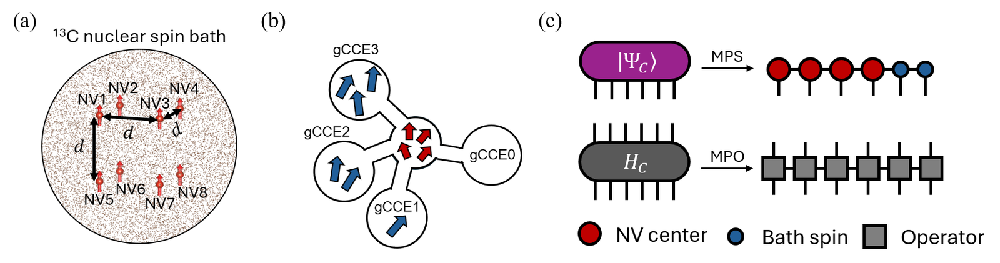

Hybrid Tensor-Network and Cluster-Correlation Expansion Approach to Decoherence in Multi-Qubit Spin Registers
Abstract
- 1SKKU Advanced Institute of Nanotechnology (SAINT), Sungkyunkwan University, Suwon, Korea
- 2Pritzker School of Molecular Engineering, University of Chicago, Chicago, IL, USA
- 3Center for Quantum Information, Korea Institute of Science and Technology, Seoul, Korea
- 4Department of Quantum Information Engineering, Sungkyunkwan University, Suwon, Korea
- 5Division of Nano and Information Technology, KIST School, Korea University of Science and Technology, Seoul, Korea
Scaling solid-state spin registers to many qubits is important for quantum computation, communication, and sensing, and requires a quantitative understanding of multi-qubit decoherence in complex spin environments. While first-principles approaches such as the cluster-correlation expansion (CCE) and its generalized form (gCCE) have successfully described single-qubit decoherence, their application to multi-qubit dynamics remains limited by the exponential growth of the Hilbert space. Tensor network (TN) methods can mitigate this growth, but long-range interactions in realistic spin baths limit their efficiency. Here, we introduce TN-gCCE, in which the cluster expansion factorizes the bath contribution into cluster correlations, while TNs compress the quantum state of each cluster into a matrix product state according to its entanglement structure. We benchmark TN-gCCE on nitrogen-vacancy (NV) registers in a 13C nuclear-spin bath, a canonical model system. For up to six NV centers, TN-gCCE shows excellent agreement with gCCE under Ramsey and Hahn-echo sequences. It also reduces the computational cost of six-NV Ramsey simulations nearly 20-fold. These results establish TN-gCCE as a scalable tool for predicting decoherence in large spin registers.
